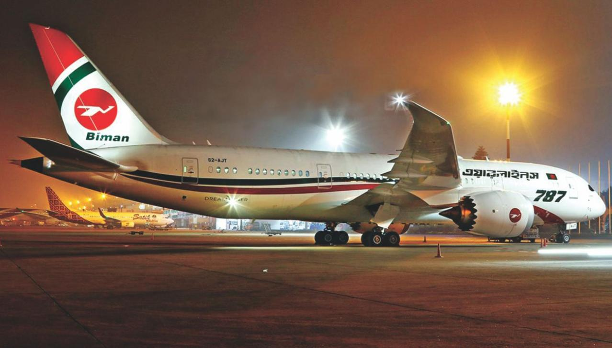
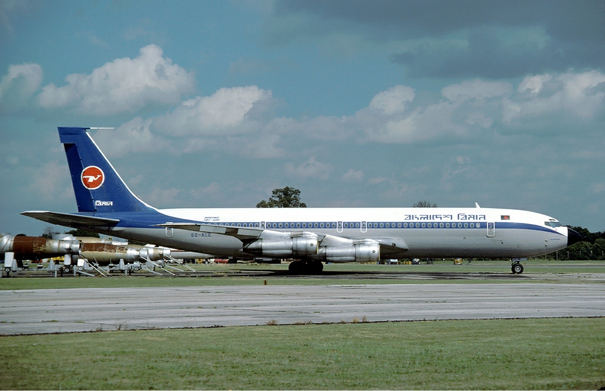
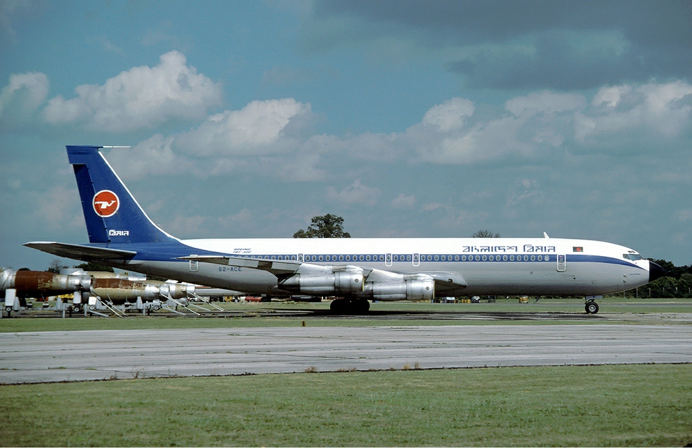
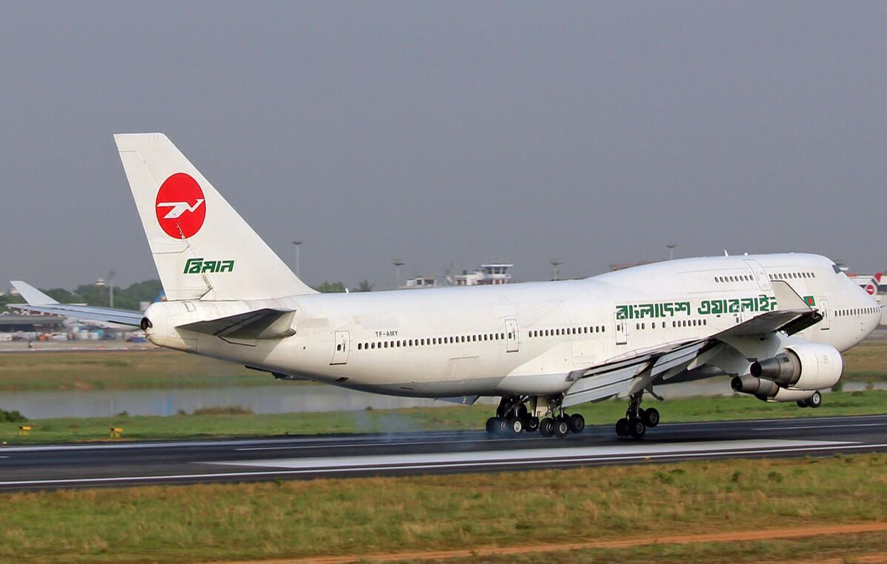
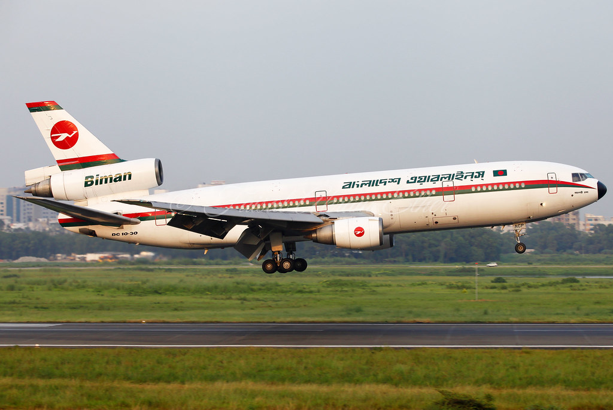
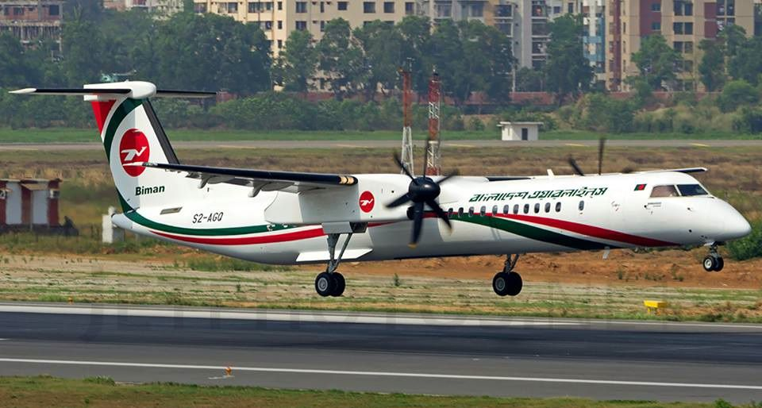
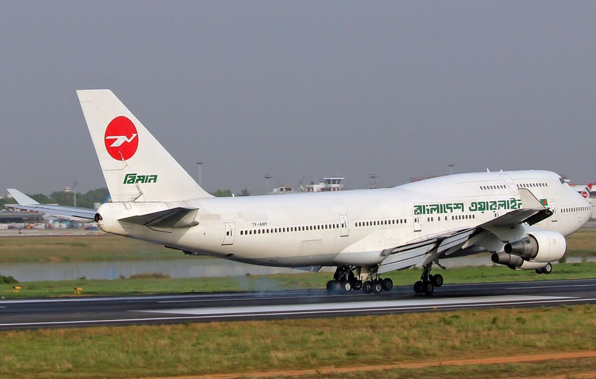
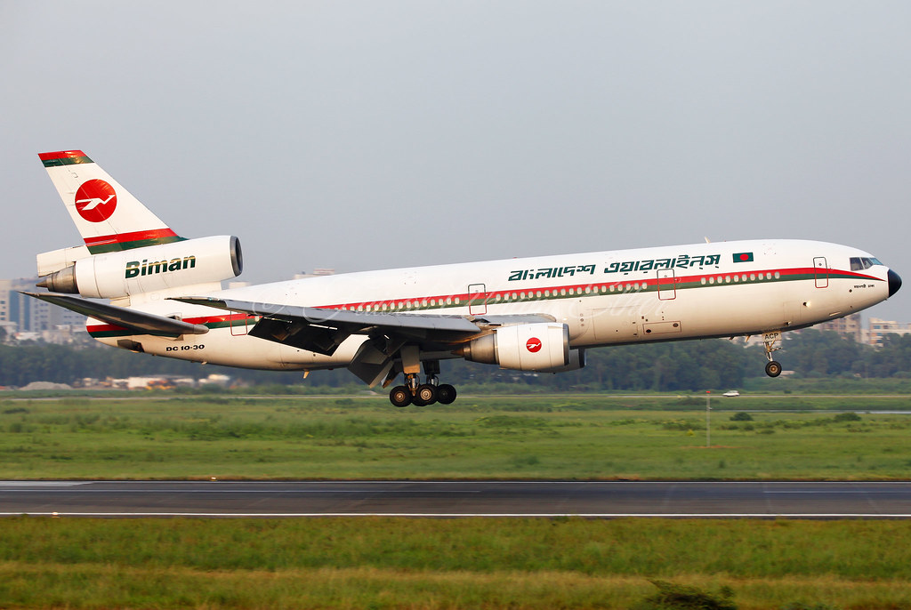
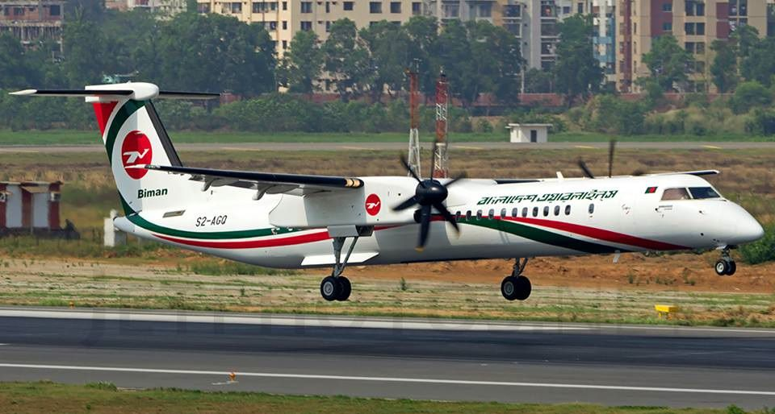

Home
Plan trip
Supprot
Fleet
Chairman : Air Chief Enamul Bari
Massage : Assalamualaikum , It is a great honour for me to serve for my Country , Bangladesh . We all are 24/7 at your service . We also ensure a very high security in every area . So , feel free to contact us for any kind of help . And enjoy your flight .
We Blieve In Excellence
It should be best or nothing Biman Bangladesh Airlines (Bengali: বিমান বাংলাদেশ এয়ারলাইন্স),[nb 1] commonly known as Biman (Bengali: বিমান), pronounced /biːmɑːn/ (bee-mah-n), is the national flag carrier of Bangladesh,[5] having its main hub at Hazrat Shahjalal International Airport in Dhaka with its flights also operating from its secondary hubs at Shah Amanat International Airport in Chittagong as well as Osmani International Airport in Sylhet. The airline provides international passenger and cargo services to multiple destinations and has air service agreements with 42 countries.[6] The headquarters of the airline, Balaka Bhaban, is located in Kurmitola, in the northern part of Dhaka. Annual Hajj flights; transporting tourists, migrants and non-resident Bangladeshi workers; and the activities of its subsidiaries form an integral part of the corporate business of the airline.[7]:11 Bangladesh's air transport sector, which is experiencing an 8% annual growth rate thanks to a large number of outbound tourists, domestic tourists and non-resident Bangladeshi travellers, is very competitive with stiff competition among a number of domestic Bangladeshi private airlines as well as Biman.
Bihanga is now available in every flight !!!
Here you will find -
- Our bengali culture
- Heritages around the world
- Daily products
- World Fashion
and many more......

.jpg) Air craft 707

Air craft 737
Air craft 707

Air craft 737
(Ldg) BFI (RYK)(46)-625x417.jpg) Air craft 747

Air craft DC-10-15

Air craft Dash 8-Q400

Air craft 747

Air craft DC-10-15

Air craft Dash 8-Q400
